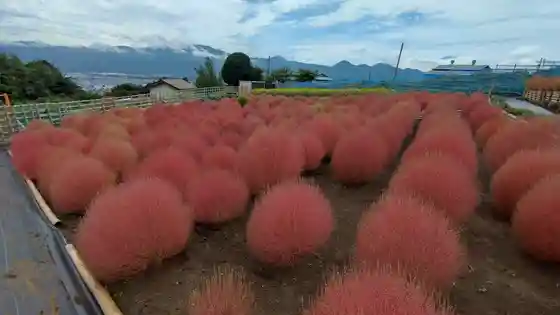
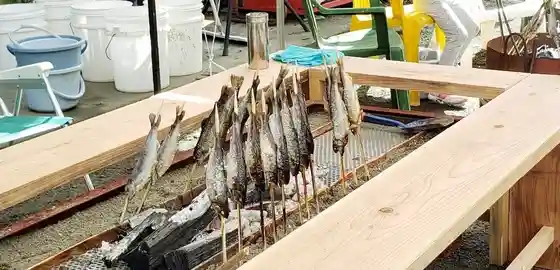
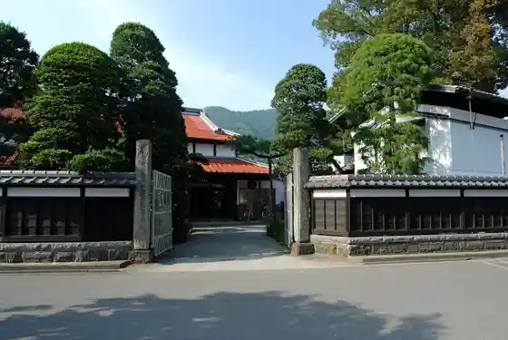
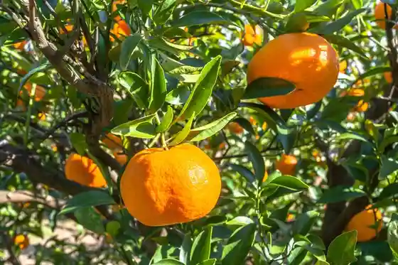

Kokia Village
Matsuda, Kanagawa · 0465-83-1228 · Official / source link

Yori Seiryu Masu Tsuriba
Matsuda, Kanagawa · 0465-89-2321 · Official / source link

Nakazawa Shuzo
Matsuda, Kanagawa · 0465-82-0024 · Official / source link

Tashiro Sono Mikan Kari
Matsuda, Kanagawa · Official / source link

Matsuda Yama Habu Garden
Matsuda, Kanagawa · 0465-85-1177 · Official / source link
Nishidaira Hatake Park
Matsuda, Kanagawa · 0465-85-1177 · Official / source link
Yori Robai Sono (Yori Robai Festival)
Matsuda, Kanagawa · 0465-83-1228 · Official / source link
Mikan Kari Matsuda Yama Mikan Village Naito Sono & Aguri Park Sagayama En (En Nai Hanaki Gyo)
Matsuda, Kanagawa · 0465-82-1423 · Official / source link
Yori Nanatsu Hoshi Dogguran & Kafe
Matsuda, Kanagawa · 0465-89-3113 · Official / source link
Naito Sono
Matsuda, Kanagawa · 0465-82-1423 · Official / source link
Romansu Tori Shopping Street
Matsuda, Kanagawa · Official / source link
Nabe Wari Yama
Matsuda, Kanagawa · Official / source link
Saimyo Tera Shiseki Park
Matsuda, Kanagawa · 0465-83-1228 · Official / source link
Nakatsugawa Soi no Shidare Sakura
Matsuda, Kanagawa · 0465-83-1228 · Official / source link
Ninomiya Sontoku no Hi
Matsuda, Kanagawa · Official / source link
Machi no Eki Ashigara
Matsuda, Kanagawa · 0465-44-4820 · Official / source link
Fukusho In
Matsuda, Kanagawa · 0465-89-2535 · Official / source link